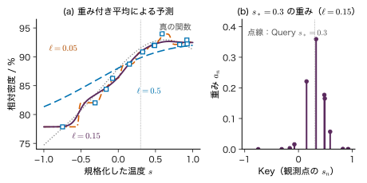
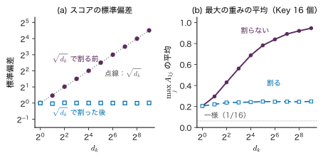
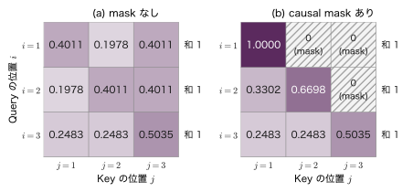
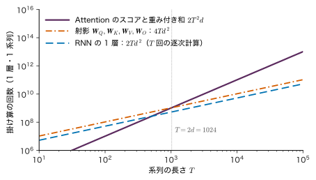

第24章Attention の仕組み — 関連する情報を重み付きで集める
- 「試料を 1200 °C で焼いたところ，それは割れた」の「それ」は試料を指す．文の中のどの語の情報をどれだけ取り込めば，「それ」の意味を表すベクトルが作れるか．
- 各トークンが系列のほかの位置から情報を集める割合（重み）は，どんな式で計算され，なぜ和が 1 になるのか．なぜ $\sqrt{d_k}$ で割るのか．
- 次のトークンを予測するモデルが「まだ書いていない未来の語」を覗かないようにするには，計算のどこを変えればよいか．
辞書を引くときは，見出し語（Key）が調べたい語（Query）と完全に一致した項目の説明（Value）を 1 つだけ取り出す．では，ぴったり一致する見出しが無いときはどうするか．似ている見出しを探し，似ている度合いに応じて説明を混ぜて読む，というのが自然な答えだろう．似ている度合いを内積で測り，softmax で重みに直して，Value を重み付きで平均する．これが本章の Attention（注意機構．どこにどれだけ「注意」を向けて情報を集めるかを決める仕組み）である．第23章で見たように，RNN は系列の情報を 1 つの隠れ状態に押し込みながら順番に読むので，遠くの語の情報が薄まりやすく，計算を並列にできない．Attention は，各位置が系列の全位置を直接見て，必要な所から必要な分だけ情報を集める．
本章では，Query・Key・Value による「柔らかい辞書引き」から出発し，scaled dot-product attention の式と行列の形，$T=3$ の数値例の手計算，$\sqrt{d_k}$ で割る理由，同じ系列から Query・Key・Value を作る self-attention，未来を見せない causal mask，multi-head attention の順に組み立てる．続いて，self-attention が語順を知らないこと（置換同変性），計算量，Attention の重みの読み方の注意を述べ，原子の集合や組成への応用で締めくくる．数値例はすべて，本章に埋め込んだシミュレーターで同じ値を確かめられる．
- Query・Key・Value の役割を「柔らかい辞書引き」として説明できる．（詳しいルート）カーネル回帰（重み付き平均）との関係を式で示せる．
- scaled dot-product attention $\softmax(\bm{Q}\bm{K}^{\tp}/\sqrt{d_k})\bm{V}$ の各行列の形を言え，softmax をどの軸に取るか（各行，Key の方向）を説明できる．
- $T=3$，$d_k=2$ の例でスコア・重み・出力を手で計算できる．
- 内積の分散が $d_k$ に比例することを導き，$\sqrt{d_k}$ で割らないと softmax が飽和して勾配が小さくなることを数値で示せる．
- self-attention と causal mask を式で書き，mask をかけても行の和が 1 のままであることを確かめられる．
- multi-head attention の行列の形とパラメーター数を数えられる．
- self-attention が置換同変であることを証明し，位置の情報が別に必要な理由を説明できる．
- 計算量 $O(T^{2}d)$ の意味を RNN と比べて説明し，Attention の重みを「判断の理由」と読むことの危うさを例で示せる．
入門ルートで読む節：24.1，24.2，24.3，24.5，24.6，24.7，24.13．「詳しいルート」の印が付いた節は，初めて読むときは飛ばしてよい．
記号：この章から系列を行に並べる
第24〜26章では，Transformer の原論文（Vaswani et al. (2017)）に合わせ，系列を行に並べた行列を使う．長さ $T$ の系列の各位置 $t=1,\dots,T$ のベクトル $\bm{x}_t\in\R^{d_{\mathrm{model}}}$（列ベクトル）を転置して第 $t$ 行に置いた行列を $\bm{X}\in\R^{T\times d_{\mathrm{model}}}$ と書く．線形変換は右から掛ける（$\bm{X}\bm{W}$）．第14章までの「列ベクトルに左から行列を掛ける」書き方（$\bm{W}\bm{x}$）とは転置の関係にあり，$(\bm{W}\bm{x})^{\tp}=\bm{x}^{\tp}\bm{W}^{\tp}$ なので内容は同じである．第16章 16.9 節は Query・Key・Value を列ベクトル $\bm{q}_i=\bm{W}_Q\bm{h}_i$ の形で書いたが，本章の $\bm{W}_Q$ はその転置に当たる．
同じ文字が他の章で別の意味を持つものがある：$\bm{K}$ は第10・12章では Gram 行列だが本章では Key の行列，$\bm{A}$ は第22章では遷移行列だが本章では Attention の重みの行列，$\bm{Z}$・$\bm{z}$ は第14章の隠れ層の出力や第17章の潜在変数ではなく本章では Attention の出力，$\bm{V}$ は Value の行列で語彙サイズ $V_{\mathrm{voc}}$ とは別である．$T$ は系列の長さ（温度ではない）．数値の例は単位のない量である．
24.1 柔らかい辞書引き — Query・Key・Value
24.1.1 何をしたいのか
「試料を 1200 °C で焼いたところ，それは割れた」という文で，「それ」に当たる位置の表現を作りたいとする．「それ」という語のベクトルだけを見ても何を指すかは分からない．文中のほかの語，とくに「試料」の情報を取り込む必要がある．一方で「1200」や「焼いた」の情報は，ここではあまり要らない．つまり，位置ごとに「どこからどれだけ情報を集めるか」を変えたい．
これを辞書引きにたとえる（図24.1）．辞書の各項目は，見出し（Key）と中身（Value）の組である．調べたいもの（Query）を見出しと照らし合わせ，
- 普通の辞書引き（硬い辞書引き）：Query と一致する見出しの Value を 1 つだけ返す．
- 柔らかい辞書引き：Query と各 Key の似ている度合いを数にし，それを足して 1 になる重みに直して，Value を重み付きで平均して返す．
柔らかい辞書引きは，一致する見出しが無くても答えを返し，しかも重みが Query と Key の滑らかな関数なので，微分して学習できる．これが Attention の核心である．
24.1.2 定義：1 つの Query の Attention
Query を 1 つ，Key と Value の組を $T_k$ 個とする．Query と Key は同じ次元 $d_k$ のベクトル，Value は次元 $d_v$ のベクトルである（$d_k$ と $d_v$ は違ってよい）．
定義24.1 1 つの Query に対する Attention
Query $\bm{q}\in\R^{d_k}$，Key $\bm{k}_1,\dots,\bm{k}_{T_k}\in\R^{d_k}$，Value $\bm{v}_1,\dots,\bm{v}_{T_k}\in\R^{d_v}$ に対し，
\begin{equation} \begin{aligned} a_j&=\frac{\exp(s_j)}{\sum_{j'=1}^{T_k}\exp(s_{j'})},\\ \bm{z}&=\sum_{j=1}^{T_k}a_j\,\bm{v}_j\in\R^{d_v} \end{aligned} \label{eq:24-single} \end{equation}を Query $\bm{q}$ に対する Attention の出力という．$s_j$ は Query と Key $\bm{k}_j$ のスコア（似ている度合い）で，本書では内積を $\sqrt{d_k}$ で割った $s_j=\bm{q}^{\tp}\bm{k}_j/\sqrt{d_k}$ を使う（割る理由は 24.4 節．24.1 節の例では簡単のため割らずに $s_j=\bm{q}^{\tp}\bm{k}_j$ とする）．$a_j$ を Attention の重みという．
重み $a_j$ はスコアの softmax（第9章 9.5 節）であり，次の 3 つの性質を持つ．
- $a_j\gt0$ かつ $\sum_ja_j=1$．出力 $\bm{z}$ は Value の凸結合（重みが 0 以上で和が 1 の重み付き平均）であり，Value たちの「間」にある．
- スコアが大きい Key ほど重みが大きい．スコアの差が大きいほど，最大のスコアの Key に重みが集中する．
- 全部のスコアに同じ数を足しても重みは変わらない（分子と分母が同じ倍率になる）．
例題24.1 柔らかい辞書引きを手で計算する
Key と Value の組が 3 つある：$\bm{k}_1=(1,0)^{\tp}$，$v_1=2.0$；$\bm{k}_2=(0,1)^{\tp}$，$v_2=4.0$；$\bm{k}_3=(1,1)^{\tp}$，$v_3=3.0$（Value は 1 次元，$d_v=1$）．Query は $\bm{q}=(1.5,0.5)^{\tp}$ である．(1) スコア $s_j=\bm{q}^{\tp}\bm{k}_j$ と重み $a_j$，出力 $z$ を求めよ．(2) 硬い辞書引き（スコア最大の Value を返す）の答えと比べよ．(3) スコアを $c$ 倍して $c=3$，$c=10$ としたときの重みと出力を求め，$c\to\infty$ で何に近づくかを述べよ．
解答 (1) 内積は $s_1=1.5\times1+0.5\times0=1.5$，$s_2=1.5\times0+0.5\times1=0.5$，$s_3=1.5+0.5=2.0$．指数をとると $e^{1.5}=4.4817$，$e^{0.5}=1.6487$，$e^{2.0}=7.3891$，和は $13.5195$．よって
$$ \begin{aligned} (a_1,a_2,a_3)&=\Bigl(\tfrac{4.4817}{13.5195},\ \tfrac{1.6487}{13.5195},\ \tfrac{7.3891}{13.5195}\Bigr)\\ &=(0.3315,\ 0.1220,\ 0.5465). \end{aligned} $$出力は
$$ \begin{aligned} z&=0.3315\times2.0+0.1220\times4.0\\ &\quad+0.5465\times3.0\\ &=0.6630+0.4878+1.6397\\ &=2.7905 . \end{aligned} $$
(2) スコア最大は $\bm{k}_3$ なので，硬い辞書引きの答えは $v_3=3.0$．柔らかい辞書引きは，ほかの項目も重み $0.33$，$0.12$ だけ混ぜるので $2.79$ になる．
(3) $c=3$ ではスコアが $(4.5,1.5,6.0)$ になり，重みは $(0.1808,\ 0.0090,\ 0.8102)$，出力 $2.828$．$c=10$ では重み $(0.0067,\ 0.0000,\ 0.9933)$，出力 $2.993$．スコアの差が $c$ 倍に広がるので，最大のスコアの重みが 1 に近づき，$c\to\infty$ では硬い辞書引きの答え $3.0$ に近づく．柔らかい辞書引きは，硬い辞書引きを滑らかにしたもの（softmax は「なめらかな最大値の位置」）である．
24.1.3 カーネル回帰は Attention の一種である
この項は，第10章 10.8 節（詳しいルート）でカーネル回帰を読んだ読者向けの補足である．読み飛ばしても 24.2 節以降の理解に差し支えない．第10章 10.8 節の Nadaraya–Watson のカーネル回帰は，予測したい点 $\bm{x}_*$ の近くの観測値を近さに応じた重みで平均した．
$$ \begin{gathered} f(\bm{x}_*)=\sum_{n=1}^{N}w_n(\bm{x}_*)\,y_n,\\ w_n(\bm{x}_*)=\frac{k(\bm{x}_*,\bm{x}_n)}{\sum_{m}k(\bm{x}_*,\bm{x}_m)} \end{gathered} $$これは式 \eqref{eq:24-single} と同じ形である．対応は Query $=\bm{x}_*$（予測したい点），Key $=\bm{x}_n$（観測した入力），Value $=y_n$（観測値），重み $=w_n$ である．RBF 型の窓 $k(x_*,x_n)=\exp\!\bigl(-(x_*-x_n)^{2}/(2\ell^{2})\bigr)$ を使うと，$k=\exp(s_n)$ とおいたスコアは $s_n=-(x_*-x_n)^{2}/(2\ell^{2})$ である（1 次元の場合）．
導出：距離のスコアを内積のスコアに書き直す
2 乗を展開する．
$$ \begin{aligned} s_n&=-\frac{(x_*-x_n)^{2}}{2\ell^{2}}\\ &=-\frac{x_*^{2}}{2\ell^{2}}+\frac{x_*x_n}{\ell^{2}}-\frac{x_n^{2}}{2\ell^{2}} . \end{aligned} $$第 1 項 $-x_*^{2}/(2\ell^{2})$ は $n$ に依らない．softmax は全部のスコアに同じ数を足しても変わらないので，この項は重みに効かない．残りは
\begin{equation} s_n\ \to\ \underbrace{\frac{x_*}{\ell}\cdot\frac{x_n}{\ell}}_{\text{内積}}\ \underbrace{-\ \frac{x_n^{2}}{2\ell^{2}}}_{\text{Key の定数}} \label{eq:24-nw} \end{equation}であり，Query $x_*/\ell$ と Key $x_n/\ell$ の内積に，Key ごとに決まる定数を足したスコアになる．
（導出終わり）
つまり，カーネル回帰は「スコアを距離で決め，学習するパラメーターを持たない Attention」である．Attention はこれを次の 2 点で一般化する．(1) スコアを内積で測り，Query・Key・Value を学習する線形変換で作る（24.5 節）．何を「似ている」とみなすかをデータから学ぶ．(2) Value をスカラーではなくベクトルにし，出力を次の層の入力にする．図24.2 は，データ A（焼成温度と相対密度．教育用の合成データ）の 12 点に，窓の幅 $\ell$ を変えたカーネル回帰を Attention として当てはめた様子である．$\ell$ が小さいとスコアの差が大きく，重みが最も近い 1〜2 点に集中する（例題24.1 の $c$ を大きくしたのと同じ）．

24.2 scaled dot-product attention — 式と行列の形
24.2.1 Query を何個もまとめて計算する
系列では，すべての位置がそれぞれ Query を持ち，同時に情報を集める．Query が $T_q$ 個，Key と Value の組が $T_k$ 個あるとき，それらを行に並べた行列を
$$ \bm{Q}=\begin{pmatrix}\bm{q}_1^{\tp}\\ \vdots\\ \bm{q}_{T_q}^{\tp}\end{pmatrix},\quad \bm{K}=\begin{pmatrix}\bm{k}_1^{\tp}\\ \vdots\\ \bm{k}_{T_k}^{\tp}\end{pmatrix},\quad \bm{V}=\begin{pmatrix}\bm{v}_1^{\tp}\\ \vdots\\ \bm{v}_{T_k}^{\tp}\end{pmatrix} $$と書く（第 $i$ 行が $i$ 番目の Query，第 $j$ 行が $j$ 番目の Key・Value）．形は $\bm{Q}\in\R^{T_q\times d_k}$，$\bm{K}\in\R^{T_k\times d_k}$，$\bm{V}\in\R^{T_k\times d_v}$ である．
定義24.2 scaled dot-product attention
$\bm{Q}\in\R^{T_q\times d_k}$，$\bm{K}\in\R^{T_k\times d_k}$，$\bm{V}\in\R^{T_k\times d_v}$ に対し，
\begin{equation} \begin{aligned} &\mathrm{Attention}(\bm{Q},\bm{K},\bm{V})\\ &\quad=\softmax\!\left(\frac{\bm{Q}\bm{K}^{\tp}}{\sqrt{d_k}}\right)\bm{V} \end{aligned} \label{eq:24-attn} \end{equation}を scaled dot-product attention という（形は $T_q\times d_v$）．ここで softmax は各行について列の方向に取る．すなわち $\bm{S}=\bm{Q}\bm{K}^{\tp}/\sqrt{d_k}\in\R^{T_q\times T_k}$（スコアの行列），$\bm{A}=\softmax(\bm{S})\in\R^{T_q\times T_k}$（重みの行列），$\bm{Z}=\bm{A}\bm{V}$（出力）とおくと，成分は次のとおりである．
式 \eqref{eq:24-out} は $i=1,\dots,T_q$ のそれぞれについて成り立つ．式 \eqref{eq:24-weight} の分母は $j'$ について（Key の方向に）和をとっている．したがって重みの行列 $\bm{A}$ の各行の和が 1である：$\sum_{j}A_{ij}=1$．各行は「Query $i$ が Key たちに配る重み」の分布であり，式 \eqref{eq:24-out} は行ごとに式 \eqref{eq:24-single} を並べたものにほかならない（定義24.1 の $a_j$ は，Query $i$ の行の $A_{ij}$ にあたる）．列の和は 1 になるとは限らない（ある Key が多くの Query から注目されれば，その列の和は大きくなる）．
24.2.2 行列の形を追う
図24.3 に計算の流れと各行列の形をまとめる．形を追うときの要点は 3 つである．
- $\bm{Q}\bm{K}^{\tp}$ は $(T_q\times d_k)(d_k\times T_k)=T_q\times T_k$．Query と Key の次元 $d_k$ がそろっていないと内積がとれない．
- softmax は形を変えない（$T_q\times T_k$ のまま）．各行が Key の上の分布になる．
- $\bm{A}\bm{V}$ は $(T_q\times T_k)(T_k\times d_v)=T_q\times d_v$．出力は Query の数だけ行があり，Value の次元の列を持つ．Key と Value の個数 $T_k$ はそろっていなければならないが，出力には現れない．
例題24.2 形と掛け算の回数
$T_q=4$，$T_k=6$，$d_k=8$，$d_v=5$ とする．(1) $\bm{S}$，$\bm{A}$，$\bm{Z}$ の形を答えよ．(2) $\bm{Q}\bm{K}^{\tp}$ と $\bm{A}\bm{V}$ の計算に必要な掛け算の回数を数えよ．(3) softmax で $\exp$ を何回計算するか．(4) 重みの行列 $\bm{A}$ の全成分の和はいくつか．
解答 (1) $\bm{S}$ と $\bm{A}$ は $T_q\times T_k=4\times6$，$\bm{Z}$ は $T_q\times d_v=4\times5$．
(2) $\bm{Q}\bm{K}^{\tp}$ の 1 つの成分は長さ $d_k=8$ の内積なので掛け算 8 回．成分は $4\times6=24$ 個あるので $24\times8=192$ 回．$\bm{A}\bm{V}$ の 1 つの成分は長さ $T_k=6$ の内積で，成分は $4\times5=20$ 個なので $20\times6=120$ 回．合わせて $312=T_qT_k(d_k+d_v)$ 回である．
(3) スコアの成分の数だけ，$4\times6=24$ 回．
(4) 各行の和が 1 で，行が $T_q=4$ 本あるので 4．
注意：softmax の軸を取り違えない
$\bm{A}=\softmax(\bm{S})$ を列の方向（各 Key について Query の方向）に取ると，「Key が Query たちに配る重み」になってしまい，出力 $\bm{A}\bm{V}$ は Value の重み付き平均ではなくなる（各行の和が 1 にならない）．プログラムでは，行列の最後の軸（Key の軸）について softmax を取る．また $\exp$ のあふれを防ぐため，各行の最大値を引いてから $\exp$ を取る（softmax の値は変わらない．第9章 9.5 節の性質）．
24.3 手計算 — 3 つの位置の Attention を数値で追う
24.3.1 設定
長さ $T=3$ の系列で，各位置が 2 次元のベクトル（$d_{\mathrm{model}}=2$）を持つとする．
$$ \begin{gathered} \bm{X}=\begin{pmatrix}1&0\\0&1\\1&1\end{pmatrix}\in\R^{3\times2},\\ \bm{W}_Q=\bm{W}_K=\bm{W}_V=\bm{I}\ (2\times2). \end{gathered} $$Query・Key・Value は $\bm{Q}=\bm{X}\bm{W}_Q$，$\bm{K}=\bm{X}\bm{W}_K$，$\bm{V}=\bm{X}\bm{W}_V$ で作る（同じ系列から作るこの形を 24.5 節で self-attention と呼ぶ）．単位行列を掛けるので $\bm{Q}=\bm{K}=\bm{V}=\bm{X}$ であり，$d_k=d_v=2$，$\sqrt{d_k}=\sqrt2=1.4142$ である．位置 1・2 は互いに直交する向き，位置 3 は両方の成分を持つ向きである．この数値は本章のシミュレーターの既定値と同じである（シミュレーター24.1）．
24.3.2 スコア → softmax → 出力
手順 1：スコア $\bm{Q}\bm{K}^{\tp}$．$(i,j)$ 成分は $\bm{q}_i^{\tp}\bm{k}_j=\bm{x}_i^{\tp}\bm{x}_j$ である．たとえば $\bm{q}_1^{\tp}\bm{k}_3=1\times1+0\times1=1$，$\bm{q}_3^{\tp}\bm{k}_3=1\times1+1\times1=2$．
$$ \bm{Q}\bm{K}^{\tp}=\begin{pmatrix}1&0&1\\0&1&1\\1&1&2\end{pmatrix}, $$ $$ \bm{S}=\frac{\bm{Q}\bm{K}^{\tp}}{\sqrt2}=\begin{pmatrix}0.7071&0&0.7071\\0&0.7071&0.7071\\0.7071&0.7071&1.4142\end{pmatrix}. $$手順 2：各行の $\exp$ と和．$e^{0.7071}=2.0281$，$e^{0}=1$，$e^{1.4142}=4.1133$ を使う．
- 行 1：$(2.0281,\ 1,\ 2.0281)$，和 $5.0562$．
- 行 2：$(1,\ 2.0281,\ 2.0281)$，和 $5.0562$．
- 行 3：$(2.0281,\ 2.0281,\ 4.1133)$，和 $8.1695$．
手順 3：和で割って重みにする．行 1 は $2.0281/5.0562=0.4011$，$1/5.0562=0.1978$ である．
\begin{equation} \bm{A}=\begin{pmatrix}0.4011&0.1978&0.4011\\0.1978&0.4011&0.4011\\0.2483&0.2483&0.5035\end{pmatrix} \label{eq:24-A-ex} \end{equation}各行の和は $0.4011+0.1978+0.4011=1.0000$ のように 1 になる．
手順 4：出力 $\bm{Z}=\bm{A}\bm{V}$．行 1 は $0.4011\,(1,0)+0.1978\,(0,1)$ $+0.4011\,(1,1)=(0.8022,\ 0.5989)$．同様に
\begin{equation} \bm{Z}=\begin{pmatrix}0.8022&0.5989\\0.5989&0.8022\\0.7517&0.7517\end{pmatrix} \label{eq:24-Z-ex} \end{equation}24.3.3 数値を読む
- 行 1：Query $(1,0)$ は Key 1 $(1,0)$ とも Key 3 $(1,1)$ とも内積 1 で，同じ重み $0.4011$ を配る．Key 2 $(0,1)$ とは直交（内積 0）なので重みは小さいが，0 ではない（$0.1978$）．softmax の重みは決して 0 にならない．閉じた形では，$e^{1/\sqrt2}$ を $c$ と書くと $A_{11}=A_{13}=c/(2c+1)$，$A_{12}=1/(2c+1)$ である．
- 行 2：行 1 の役割を第 1 成分と第 2 成分で入れ替えたものなので，重みも出力も入れ替わる．
- 行 3：Query $(1,1)$ は自分自身（Key 3）との内積 2 が最大で，重みの半分（$0.5035$）を自分に置く．
- 出力：出力の各行は Value の凸結合なので，Value たちの範囲（各成分が 0〜1）に収まり，元の $\bm{x}_i$ より「平均に寄った」ベクトルになる．位置 1 の出力 $(0.8022,0.5989)$ は，自分の $(1,0)$ に，位置 3 の $(1,1)$ と位置 2 の $(0,1)$ の情報を混ぜたものである．
例題24.3 $\sqrt{d_k}$ で割らない場合
上の例で $\sqrt{d_k}$ で割らずに $\bm{A}=\softmax(\bm{Q}\bm{K}^{\tp})$ とすると，行 1 と行 3 の重みと出力はいくつになるか．割った場合と比べて何が変わるか．
解答 行 1 のスコアは $(1,0,1)$．$e^{1}=2.7183$，$e^{0}=1$ で和 $6.4366$．重みは $(2.7183,\,1,\,2.7183)/6.4366$ $=(0.4223,\ 0.1554,\ 0.4223)$，出力は $0.4223\,(1,0)+0.1554\,(0,1)$ $+0.4223\,(1,1)=(0.8446,\ 0.5777)$．
行 3 のスコアは $(1,1,2)$．$e^{2}=7.3891$ で和 $2.7183+2.7183+7.3891=12.8256$．重みは $(0.2119,\ 0.2119,\ 0.5761)$，出力は $0.2119\,(1,0)+0.2119\,(0,1)$ $+0.5761\,(1,1)=(0.7881,\ 0.7881)$．
割らないとスコアの差が $\sqrt2$ 倍に広がるので，大きいスコアの Key への重みが増える（行 3 の自分への重み $0.5035\to0.5761$）．$d_k=2$ では差は小さいが，$d_k$ が大きいとこの差が非常に大きくなる（24.4 節）．
シミュレーター24.1 Attention を数値で追う
行列 $\bm{X}$，$\bm{W}_Q$，$\bm{W}_K$，$\bm{W}_V$ を手で与え，スコア → $\sqrt{d_k}$ で割る → softmax → 出力の流れを，すべての途中の数値とともに表示する装置である．重みは手で設定した値で，学習したモデルではない（装置は 1 ヘッドで，$d_k=d_v=d_{\mathrm{model}}$，バイアスと出力の射影 $\bm{W}_O$ を省いている）．
操作と観察
- 開いた直後の既定（プリセット「既定（24.3 の手計算）」，系列の長さ $T$ = 3，$d_{\mathrm{model}}$ = 2，「√d_k で割る」オン，「causal mask」オフ）のまま，重み $\bm{A}$ の濃淡の図と「計算の流れ」の表を見る → スコア $\bm{Q}\bm{K}^{\tp}$ の 1 行目が (1, 0, 1)，割った後が (0.7071, 0, 0.7071)，重み $\bm{A}$ が式 \eqref{eq:24-A-ex}，出力 $\bm{Z}$ が式 \eqref{eq:24-Z-ex} と一致する．
- 「いまの数値を式に入れると」で行 1 の計算を読む → $s_{11}=(1\times1+0\times0)/1.414=0.7071$ などの式，$\exp s_{1j}$ が (2.028, 1, 2.028)，和 5.056，$A_{1j}$ が (0.4011, 0.1978, 0.4011)，$\bm{z}_1=(0.8022, 0.5989)$ と並ぶ．24.3.2 項の手順 1〜4 と 1 行ずつ照合する．
- 「式を表示する Query の行 $i$」を 3 にする → $\exp$ が (2.028, 2.028, 4.113)，和 8.169，重み (0.2483, 0.2483, 0.5035)，$\bm{z}_3=(0.7517, 0.7517)$．読み出しの「各行の重みの和」が 1.0000，1.0000，1.0000，「スコアの範囲（割った後）」が 0 〜 1.414 であることも確かめる．
- 「√d_k で割る」をオフにする → 行 1 の重みが (0.4223, 0.1554, 0.4223)，行 3 が (0.2119, 0.2119, 0.5761) になり，例題24.3 の答えと一致する．確かめたら「既定に戻す」を押す．
操作後の問い
- 行 1 で Key 1 と Key 3 の重みが等しいのはなぜか．$\bm{X}$ の 3 行目を (1, 0.5) に変えると，行 1 の重みはどう変わると予想できるか（予想してから数値欄に入れて確かめよ）．
答えの例
Query $(1,0)$ と Key 1 $(1,0)$，Key 3 $(1,1)$ の内積がどちらも 1 だからである．Key 3 を $(1,0.5)$ にしても Query $(1,0)$ との内積は 1 のままなので，行 1 のスコアは (0.7071, 0, 0.7071) で変わらず，重みも (0.4011, 0.1978, 0.4011) のままである（ただし Value 3 が変わるので出力は $(0.8022, 0.3983)$ に変わる）．Query の向きに直交する成分は，スコアに効かない．
- 出力 $\bm{z}_3=(0.7517,0.7517)$ の 2 つの成分が等しいのはなぜか．
答えの例
行 3 の重みは Key 1 と Key 2 で等しく（0.2483），Value 1 $(1,0)$ と Value 2 $(0,1)$ は成分を入れ替えた関係にあるので，この 2 項の和は $(0.2483,0.2483)$ と両成分が等しい．Value 3 $(1,1)$ も両成分が等しいので，和の両成分は $0.2483+0.5035=0.7517$ で等しくなる．
24.4 なぜ $\sqrt{d_k}$ で割るか — 内積の分散と softmax の飽和詳しいルート
24.4.1 内積の大きさは次元とともに増える
Query と Key の次元 $d_k$ が大きくなると，内積 $\bm{q}^{\tp}\bm{k}=\sum_{l=1}^{d_k}q_lk_l$ は $d_k$ 個の項の和なので，典型的な大きさが増える．学習の初めのように成分がランダムな状況を考えて，その大きさを見積もる．
定理24.1 内積の分散
$\bm{q}=(q_1,\dots,q_{d_k})^{\tp}$ と $\bm{k}=(k_1,\dots,k_{d_k})^{\tp}$ の $2d_k$ 個の成分が互いに独立で，どれも平均 0・分散 1 とする．このとき内積 $\bm{q}^{\tp}\bm{k}$ の平均は 0，分散は $d_k$ である．したがって $\bm{q}^{\tp}\bm{k}/\sqrt{d_k}$ の分散は 1 である．
証明
1 つの項 $q_lk_l$ について．$q_l$ と $k_l$ が独立なので期待値は積に分かれ（第2章 2.5 節），
$$ \Ex[q_lk_l]=\Ex[q_l]\,\Ex[k_l]=0\times0=0 . $$分散は $\Var[q_lk_l]=\Ex[(q_lk_l)^{2}]-(\Ex[q_lk_l])^{2}=\Ex[q_l^{2}k_l^{2}]$．$q_l^{2}$ と $k_l^{2}$ も独立なので
$$ \Ex[q_l^{2}k_l^{2}]=\Ex[q_l^{2}]\,\Ex[k_l^{2}]=1\times1=1 . $$（$\Ex[q_l^{2}]=\Var[q_l]+(\Ex[q_l])^{2}=1+0=1$ を使った．）異なる $l$ の項 $q_lk_l$ と $q_mk_m$ は別々の成分から作られるので独立であり，独立な確率変数の和の分散は分散の和である．よって
\begin{equation} \begin{aligned} \Var\bigl[\bm{q}^{\tp}\bm{k}\bigr]&=\sum_{l=1}^{d_k}\Var[q_lk_l]\\ &=d_k . \end{aligned} \label{eq:24-var} \end{equation}平均は $\sum_l\Ex[q_lk_l]=0$．定数倍 $c$ の分散は $c^{2}$ 倍になるので，$\Var[\bm{q}^{\tp}\bm{k}/\sqrt{d_k}]=d_k/d_k=1$ である．
（証明終わり）
つまり，割らなければスコアの標準偏差は $\sqrt{d_k}$ で増える．Transformer の原論文の基本設定 $d_k=64$ では標準偏差が 8 になる．標準偏差 8 のスコアを $T_k$ 個並べれば，最大のものと 2 番目の差が数〜十程度になることが珍しくない．$e^{8}\approx3000$ なので，softmax の重みはほぼ 1 つの Key に集中する．
24.4.2 飽和した softmax は勾配を通さない
学習では，損失を Attention の重みを通してスコアで微分する（第15章の誤差逆伝播）．1 行の softmax $a_j=\exp(s_j)/\sum_{j'}\exp(s_{j'})$ のスコアについての微分を求める．
導出：softmax の Jacobi 行列
分母を $Z_s=\sum_{j'}\exp(s_{j'})$ と書く．$\partial Z_s/\partial s_l=\exp(s_l)$ である．商の微分により，
$$ \begin{aligned} \pdiff{a_j}{s_l}&=\frac{\delta_{jl}\exp(s_j)\,Z_s-\exp(s_j)\exp(s_l)}{Z_s^{2}}\\ &=\delta_{jl}\,a_j-a_ja_l . \end{aligned} $$ここで $\delta_{jl}$ は $j=l$ のとき 1，それ以外で 0 である．$\partial a_j/\partial s_l$ を $(j,l)$ 成分とする行列（Jacobi（ヤコビ）行列）で書くと
\begin{equation} \pdiff{\bm{a}}{\bm{s}}=\diag(\bm{a})-\bm{a}\bm{a}^{\tp} \label{eq:24-jac} \end{equation}（導出終わり）
対角成分は $a_j(1-a_j)$ である．重みが 1 つの Key に集中して $a_{j^*}\approx1$，ほかが $\approx0$ になると，対角成分は $a_{j^*}(1-a_{j^*})\approx0$ と $a_j(1-a_j)\approx0$，非対角成分 $-a_ja_l$ も $\approx0$ になる．つまり飽和した softmax の Jacobi 行列はほぼ零行列で，スコアを少し動かしても重みが変わらず，勾配がほとんど流れない．$\sqrt{d_k}$ で割ってスコアの分散を 1 に保つと，学習の初めの softmax が飽和しにくい．

同じ数値実験で，Jacobi 行列 \eqref{eq:24-jac} の大きさ（Frobenius ノルム，成分の 2 乗和の平方根）の平均を測ると，割った場合は $d_k$ によらず約 0.30 だが，割らない場合は $d_k=64$ で 0.18，$d_k=512$ で 0.070 まで小さくなる．
例題24.4 スコアを 3 倍にしたときの飽和と勾配
24.3 節の例で $\bm{W}_Q$ を $3\bm{I}$ にする（$\bm{Q}=3\bm{X}$．$\bm{K}=\bm{V}=\bm{X}$ のまま）．行 3 について，(1) $\sqrt2$ で割る場合と割らない場合の重みと出力を求めよ．(2) Jacobi 行列 \eqref{eq:24-jac} の対角成分 $a_j(1-a_j)$ を，既定（$\bm{W}_Q=\bm{I}$，割る）の場合と比べよ．
解答 (1) 行 3 の Query は $3(1,1)=(3,3)$ なので，スコア $\bm{q}_3^{\tp}\bm{k}_j$ は $(3,3,6)$．
割る場合：$(3,3,6)/\sqrt2=(2.1213,\ 2.1213,\ 4.2426)$．$\exp$ は $(8.342,\ 8.342,\ 69.59)$，和 $86.28$．重み $(0.0967,\ 0.0967,\ 0.8066)$，出力 $0.0967\,(1,0)+0.0967\,(0,1)$ $+0.8066\,(1,1)=(0.9033,\ 0.9033)$．
割らない場合：$\exp(3)=20.09$，$\exp(6)=403.4$，和 $443.6$．重み $(0.0453,\ 0.0453,\ 0.9094)$，出力 $(0.9547,\ 0.9547)$．
(2) 既定の行 3 の重みは $(0.2483,0.2483,0.5035)$ で，対角成分は $(0.1866,\ 0.1866,\ 0.2500)$．3 倍・割る場合は $(0.0873,\ 0.0873,\ 0.1560)$，3 倍・割らない場合は $(0.0432,\ 0.0432,\ 0.0824)$．スコアが大きいほど重みが 1 つに集中し，対角成分（重みがスコアの変化にどれだけ応じるか）が小さくなる．割らない場合は既定の 4 分の 1〜3 分の 1 程度まで小さくなっている．
これはシミュレーター24.1でプリセット「W_Q を 3 倍（スコアが大きい）」を選び，「式を表示する Query の行 $i$」を 3 にして「√d_k で割る」をオン・オフすると，そのまま確かめられる（重み 0.8066 と 0.9094）．
24.5 self-attention — 同じ系列から Query・Key・Value を作る
24.5.1 定義
24.3 節の例では $\bm{Q}=\bm{K}=\bm{V}=\bm{X}$ とした．これでは「何を似ているとみなすか」も「何を渡すか」も入力のベクトルそのものに固定されてしまう．実際のモデルでは，同じ入力 $\bm{X}$ から，学習する 3 つの行列で Query・Key・Value を別々に作る．
定義24.3 self-attention
系列 $\bm{X}\in\R^{T\times d_{\mathrm{model}}}$ と，学習するパラメーター $\bm{W}_Q,\bm{W}_K\in\R^{d_{\mathrm{model}}\times d_k}$，$\bm{W}_V\in\R^{d_{\mathrm{model}}\times d_v}$ から
$$ \bm{Q}=\bm{X}\bm{W}_Q,\quad \bm{K}=\bm{X}\bm{W}_K,\quad \bm{V}=\bm{X}\bm{W}_V $$（それぞれ $T\times d_k$，$T\times d_k$，$T\times d_v$）を作り，式 \eqref{eq:24-attn} の $\mathrm{Attention}(\bm{Q},\bm{K},\bm{V})\in\R^{T\times d_v}$ を出力とする操作を self-attention（自己注意）という．Query と Key・Value が同じ系列から作られる（$T_q=T_k=T$）ことが名前の由来である．
位置 $i$ の Query は $\bm{q}_i^{\tp}=\bm{x}_i^{\tp}\bm{W}_Q$，Key は $\bm{k}_j^{\tp}=\bm{x}_j^{\tp}\bm{W}_K$ なので，スコアは
\begin{equation} \bm{q}_i^{\tp}\bm{k}_j=\bm{x}_i^{\tp}\bigl(\bm{W}_Q\bm{W}_K^{\tp}\bigr)\bm{x}_j \label{eq:24-bilinear} \end{equation}という双 1 次形式である．$\bm{W}_Q\bm{W}_K^{\tp}\in\R^{d_{\mathrm{model}}\times d_{\mathrm{model}}}$ が「位置 $i$ から見て位置 $j$ がどれだけ関係するか」の物差しを決める．この行列は対称とは限らないので，$i$ から $j$ へのスコアと $j$ から $i$ へのスコアは一般に異なる（「それ」は「試料」を強く見るが，「試料」が「それ」を強く見るとは限らない）．$\bm{W}_V$ は「見つけた位置から何を受け取るか」を決める．学習で調整されるのは $\bm{W}_Q,\bm{W}_K,\bm{W}_V$（多くの実装ではバイアスも）だけで，スコア・重み・出力はそこから計算される量である．パラメーター数は $d_{\mathrm{model}}(2d_k+d_v)$ で，系列の長さ $T$ によらない．同じ重みを全位置で使うので，どんな長さの系列にも同じ層を適用できる．
なお，Query だけを別の系列から作り，Key・Value を別の系列から作る形を cross-attention という（翻訳で，出力側の各位置が入力文の全位置を見る．第25章 25.6 節で扱う）．第23章 23.8 節の Bahdanau et al. (2015) の Attention はこの形の先駆けである（ただしスコアは内積ではなく小さなニューラルネットワークで計算していた）．
例題24.5 Key と Value を別の行列で作る
$T=4$，$d_{\mathrm{model}}=2$ の系列 $\bm{X}$ の行を $(1,0)$，$(0,1)$，$(1,0.5)$，$(0.5,1)$ とし，$\bm{W}_Q=\bm{W}_K=\bm{I}$，$\bm{W}_V=\begin{pmatrix}0&1\\1&0\end{pmatrix}$（成分を入れ替える）とする．(1) $\bm{V}$ を求めよ．(2) 位置 1 の重みと出力 $\bm{z}_1$ を求めよ．(3) $\bm{W}_V$ を変えると重みは変わるか．
解答 (1) $\bm{V}=\bm{X}\bm{W}_V$ は各行の 2 つの成分を入れ替えたもので，行は $(0,1)$，$(1,0)$，$(0.5,1)$，$(1,0.5)$．
(2) $\bm{q}_1=(1,0)$ と各 Key の内積は $(1,\ 0,\ 1,\ 0.5)$．$\sqrt2$ で割って $(0.7071,\ 0,\ 0.7071,\ 0.3536)$．$\exp$ は $(2.0281,\ 1,\ 2.0281,\ 1.4241)$，和 $6.4803$．重みは $(0.3130,\ 0.1543,\ 0.3130,\ 0.2198)$．出力は
(3) 重みは $\bm{Q}$ と $\bm{K}$ だけで決まるので，$\bm{W}_V$ を変えても変わらない．$\bm{W}_V$ は「どこから集めるか」ではなく「何を集めるか」だけを変える．この例はシミュレーター24.1 のプリセット「Key と Value を別に（T = 4）」と同じで，画面でも行 1 の重み (0.3130, 0.1543, 0.3130, 0.2198) と出力 (0.5306, 0.7358) が出る（4 桁に丸めた重みで計算すると第 2 成分は 0.7359 になるが，丸める前の重みで計算した値は 0.7358 である）．
24.6 causal mask — 先を見ない Attention
24.6.1 なぜ未来を隠すのか
GPT のような言語モデルは，位置 $t$ までのトークン $x_{\le t}$ から次のトークン $x_{t+1}$ の確率 $p(x_{t+1}\mid x_{\le t})$ を出す（第22章の自己回帰分解 $p(x_{1:T})=\prod_tp(x_t\mid x_{\lt t})$）．学習では正解の文 $x_1,\dots,x_T$ を丸ごと入力し，全位置の予測を 1 回の計算で同時に求めて損失を足し合わせる（第26章 26.4 節）．このとき，位置 $t$ の self-attention が位置 $t+1$ 以降を見られると，予測すべき $x_{t+1}$ そのものを入力から読み取れてしまう．それでは答えを写すだけで，何も学ばない．また，文章を生成するときは $x_{t+1}$ はまだ存在しないので，学習時と生成時で計算の条件がそろわない．
そこで，位置 $i$ の Query は位置 $j\le i$ の Key だけを見るように制限する．これを causal mask（因果的なマスク．原因は結果より前にある，という意味で「因果的」と呼ぶ）という．
定義24.4 causal mask
$T\times T$ の行列 $\bm{M}$ を
\begin{equation} M_{ij}=\begin{cases}0 & (j\le i)\\ -\infty & (j\gt i)\end{cases} \label{eq:24-mask} \end{equation}と定め，スコアに足してから softmax を取る．
$$ \begin{gathered} \bm{A}=\softmax\!\left(\frac{\bm{Q}\bm{K}^{\tp}}{\sqrt{d_k}}+\bm{M}\right),\\ \bm{Z}=\bm{A}\bm{V}. \end{gathered} $$$\bm{M}$ は対角より上（$j\gt i$）が $-\infty$ の上三角の部分を持つ．
$\exp(-\infty)=0$ なので，mask した位置の重みはちょうど 0 になる．分母の和も見られる位置 $j\le i$ だけの和になるので，行の和は 1 のままである．
$$ \begin{gathered} A_{ij}=\frac{\exp(s_{ij})}{\sum_{j'=1}^{i}\exp(s_{ij'})}\quad(j\le i),\\ A_{ij}=0\quad(j\gt i). \end{gathered} $$位置 1 は自分しか見られないので，常に $A_{11}=1$ である．最後の位置 $T$ はすべての位置を見られるので，mask の有無で結果が変わらない．実装では $-\infty$ の代わりに $-10^{9}$ のような大きな負の数を足すこともあるが，各行の最大値を引いてから $\exp$ を取れば，$-\infty$ のままでも計算はあふれない（行には少なくとも自分自身 $j=i$ という有限のスコアが必ず残る）．
24.6.2 24.3 節の例に mask をかける
スコア $\bm{S}$ は 24.3 節と同じである．$\bm{M}$ を足すと
$$ \bm{S}+\bm{M}=\begin{pmatrix}0.7071&-\infty&-\infty\\0&0.7071&-\infty\\0.7071&0.7071&1.4142\end{pmatrix}. $$- 行 1：$\exp$ は $(2.0281,\ 0,\ 0)$，和 $2.0281$．重み $(1,\ 0,\ 0)$，出力 $\bm{z}_1=\bm{v}_1=(1,\ 0)$．
- 行 2：$\exp$ は $(1,\ 2.0281,\ 0)$，和 $3.0281$．重み $(1/3.0281,\ 2.0281/3.0281,\ 0)$ $=(0.3302,\ 0.6698,\ 0)$，出力 $0.3302\,(1,0)+0.6698\,(0,1)$ $=(0.3302,\ 0.6698)$．
- 行 3：mask は効かないので 24.3 節と同じ $(0.2483,\ 0.2483,\ 0.5035)$，出力 $(0.7517,\ 0.7517)$．
mask の前の行 2 は $(0.1978,0.4011,0.4011)$ だった．位置 3 に置いていた $0.4011$ の重みが取り除かれ，残りの $0.1978:0.4011$ の比を保ったまま和が 1 になるよう割り直された（$0.1978/0.5989=0.3302$）．mask は「見てはいけない位置の重みを 0 にして，残りで割り直す」操作である（図24.5）．

例題24.6 未来の入力を変えても過去の出力は変わらない
24.3 節の例で $\bm{X}$ の 3 行目だけを $(1,1)$ から $(2,-1)$ に変える．(1) causal mask ありで，位置 1・2 の出力は変わるか．位置 3 の重みと出力を求めよ．(2) mask なしでは位置 1 の出力はどうなるか．(3) $T\times T$ の mask で 0 になる重みは何個か．
解答 (1) mask ありでは，位置 1 は $\bm{x}_1$ だけ，位置 2 は $\bm{x}_1,\bm{x}_2$ だけから計算されるので，$\bm{x}_3$ を変えても出力 $(1,0)$，$(0.3302,0.6698)$ は変わらない．位置 3：$\bm{q}_3=(2,-1)$ と Key $(1,0)$，$(0,1)$，$(2,-1)$ の内積は $(2,\ -1,\ 5)$．$\sqrt2$ で割って $(1.4142,\ -0.7071,\ 3.5355)$．$\exp$ は $(4.1133,\ 0.4931,\ 34.3133)$，和 $38.9196$．重み $(0.1057,\ 0.0127,\ 0.8816)$．出力は
$$ \begin{aligned} \bm{z}_3&=0.1057\,(1,0)+0.0127\,(0,1)\\ &\quad+0.8816\,(2,-1)\\ &=(1.8690,\ -0.8690). \end{aligned} $$(2) mask なしでは位置 1 も位置 3 を見るので，スコアは $(1,0,2)/\sqrt2$，重み $(0.2840,\ 0.1400,\ 0.5760)$，出力 $(1.436,\ -0.436)$ に変わる（元は $(0.8022,0.5989)$）．未来の入力が過去の位置の出力に漏れ込んでいる．
(3) 対角より上の成分の数なので $T(T-1)/2$．$T=3$ では 3 個．
例題24.6 (1) の性質「位置 $i$ の出力は $\bm{x}_1,\dots,\bm{x}_i$ だけで決まる」は，mask をかけた self-attention を何層重ねても保たれる（各層の位置 $i$ の出力が前の層の位置 $1,\dots,i$ の出力だけで決まるので，帰納的に入力の位置 $1,\dots,i$ だけで決まる）．これが，GPT の全位置の次トークン予測を 1 回の順伝播で正しく学習できる理由である（第26章 26.4 節）．
シミュレーター24.2 causal mask の効き方
シミュレーター24.1 と同じ装置で，causal mask をかけたときの重みの変化を確かめる．mask した位置は斜線と「mask → 0」で表示される．
操作と観察
- 既定（プリセット「既定（24.3 の手計算）」）のまま「causal mask」をオンにする → 重みの図の 1 行目が (1, 0, 0)，2 行目が (0.3302, 0.6698, 0)，3 行目が (0.2483, 0.2483, 0.5035) で変わらない．「計算の流れ」に「+ $\bm{M}$（causal mask）」の表が現れ，対角より上が −∞ になる．式 \eqref{eq:24-mask} と図24.5 と比べる．
- 「式を表示する Query の行 $i$」を 2 にする → $s_{23}$ の行に「（$j\gt i$ なので mask）−∞」と出て，$\exp s_{2j}$ が (1, 2.028, 0)，和 3.028，行の和が 1 であることを確かめる．読み出しの「mask で 0 にした重み」は 3 個（すべて厳密に 0）．
- $\bm{X}$ の 3 行目の数値欄を (2, −1) に変える → 重みの 1・2 行目と出力 $\bm{Z}$ の 1・2 行目は変わらず，3 行目だけが重み (0.1057, 0.01267, 0.8816)，出力 (1.869, −0.8690) になる（例題24.6）．「causal mask」をオフにすると，1 行目の出力も (1.436, −0.4359) に変わる．確かめたら「既定に戻す」を押す．
- プリセット「W_Q を 3 倍（スコアが大きい）」を選び，「causal mask」をオンにする → 2 行目が (0.1070, 0.8930, 0) になり，mask の後も大きなスコアの位置に重みが集中することを見る．
操作後の問い
- mask をかけると，1 行目の出力は必ず $\bm{X}\bm{W}_V$ の 1 行目に一致する．なぜか．
答えの例
位置 1 が見られるのは自分（$j=1$）だけなので，スコアがいくつでも softmax は $(1,0,\dots,0)$ になり，出力は $1\times\bm{v}_1=\bm{v}_1$ である．既定では $\bm{W}_V=\bm{I}$ なので $\bm{v}_1=(1,0)$．
- 手順 3 で，mask ありのときに 3 行目の重みと出力が mask なしのときと同じなのはなぜか．
答えの例
最後の位置 $i=T=3$ では $j\gt i$ となる $j$ が無く，mask $\bm{M}$ の 3 行目はすべて 0 だからである．最後の位置はすべての位置を見られる．
24.7 multi-head attention — 複数の見方を並べる
24.7.1 1 組の重みでは 1 種類の関係しか表しにくい
「それは割れた」の「それ」は，指している名詞（試料）を探したい．一方で「割れた」という述語は，主語や時制に関わる別の位置を見たいかもしれない．1 組の $\bm{W}_Q,\bm{W}_K$ が作るスコアは 1 種類の物差し（式 \eqref{eq:24-bilinear}）なので，1 つの Query が「名詞を探す見方」と「述語を探す見方」を同時に持つのは難しい．1 行の重みは和が 1 なので，2 か所に分けて置くとどちらの情報も薄まる．そこで，小さな Attention を何組も並列に計算し，結果をつなぐ．
定義24.5 multi-head attention
ヘッドの数を $n_{\mathrm{head}}$ とし，各ヘッド $j=1,\dots,n_{\mathrm{head}}$ に別々の行列 $\bm{W}_Q^{(j)},\bm{W}_K^{(j)}\in\R^{d_{\mathrm{model}}\times d_k}$，$\bm{W}_V^{(j)}\in\R^{d_{\mathrm{model}}\times d_v}$ を持たせる（本節と演習24.4 では $j$ をヘッドの番号に使う．Key の番号ではない）．各ヘッドの出力と，全体の出力を次のように定める．
ここで $\bm{Q}_j=\bm{X}\bm{W}_Q^{(j)}$，$\bm{K}_j=\bm{X}\bm{W}_K^{(j)}$，$\bm{V}_j=\bm{X}\bm{W}_V^{(j)}$ はヘッド $j$ の Query・Key・Value，$\bm{Z}_j\in\R^{T\times d_v}$ はヘッド $j$ の出力，$\mathrm{MHA}$ は multi-head attention の略である．$[\ \cdots\ ]$ は行列を横に並べてつなぐ（連結する）ことを表し，その形は $T\times(n_{\mathrm{head}}d_v)$ である．$\bm{W}_O\in\R^{n_{\mathrm{head}}d_v\times d_{\mathrm{model}}}$ は連結したものを元の次元 $d_{\mathrm{model}}$ に戻す学習する行列で，ヘッドの情報を混ぜ合わせる．通常は $d_k=d_v=d_{\mathrm{model}}/n_{\mathrm{head}}$ と選ぶ（Transformer の原論文の基本設定では $d_{\mathrm{model}}=512$，$n_{\mathrm{head}}=8$，$d_k=d_v=64$）．こうすると連結の幅 $n_{\mathrm{head}}d_v$ がちょうど $d_{\mathrm{model}}$ になり，全ヘッドの計算量の合計は，幅 $d_{\mathrm{model}}$ のヘッド 1 つとほぼ同じになる．
24.7.2 パラメーター数
1 つのヘッドの $\bm{W}_Q^{(j)},\bm{W}_K^{(j)},\bm{W}_V^{(j)}$ の成分の数は $d_{\mathrm{model}}d_k+d_{\mathrm{model}}d_k+d_{\mathrm{model}}d_v$．$d_k=d_v=d_{\mathrm{model}}/n_{\mathrm{head}}$ のとき，全ヘッドで
$$ n_{\mathrm{head}}\times3\,d_{\mathrm{model}}\frac{d_{\mathrm{model}}}{n_{\mathrm{head}}}=3\,d_{\mathrm{model}}^{2} $$である．これに $\bm{W}_O$ の $(n_{\mathrm{head}}d_v)\times d_{\mathrm{model}}=d_{\mathrm{model}}^{2}$ を足して，1 つの multi-head attention の重みは $4d_{\mathrm{model}}^{2}$ 個（バイアスを付けるならさらに $4d_{\mathrm{model}}$ 個）になる．ヘッドの数を変えてもこの数は変わらない．ヘッドを増やすことは，パラメーターを増やすことではなく，同じ数のパラメーターを「何種類の見方に分けるか」の選択である．実装では，全ヘッドの $\bm{W}_Q^{(j)}$ を横に並べた $d_{\mathrm{model}}\times d_{\mathrm{model}}$ の行列 1 つで $\bm{Q}$ をまとめて計算し，それを列の方向に $n_{\mathrm{head}}$ 等分して各ヘッドに配ることが多い．
例題24.7 2 ヘッドの Attention を手で計算する
$T=3$，$d_{\mathrm{model}}=4$，$n_{\mathrm{head}}=2$，$d_k=d_v=2$ とする．入力の行を $(1,0,0,1)$，$(0,1,1,0)$，$(1,1,0,0)$ とする．ヘッド 1 の $\bm{W}_Q^{(1)}=\bm{W}_K^{(1)}=\bm{W}_V^{(1)}$ は前半の 2 成分を取り出す $4\times2$ の行列 $\begin{pmatrix}\bm{I}\\ \bm{O}\end{pmatrix}$，ヘッド 2 は後半の 2 成分を取り出す $\begin{pmatrix}\bm{O}\\ \bm{I}\end{pmatrix}$ とし，$\bm{W}_O=\bm{I}$（$4\times4$）とする（$\bm{O}$ は $2\times2$ の零行列）．(1) 各ヘッドの重みと出力を求めよ．(2) multi-head attention の出力を求めよ．(3) この層のパラメーター数（バイアスなし）を数えよ．
解答 (1) ヘッド 1 が見る入力は前半の成分 $(1,0)$，$(0,1)$，$(1,1)$ で，24.3 節の $\bm{X}$ と同じである．重みは式 \eqref{eq:24-A-ex}，出力は式 \eqref{eq:24-Z-ex} になる．
ヘッド 2 が見る入力は後半の成分 $(0,1)$，$(1,0)$，$(0,0)$．内積の行列は $\begin{pmatrix}1&0&0\\0&1&0\\0&0&0\end{pmatrix}$ で，$\sqrt2$ で割ると行 1 は $(0.7071,0,0)$．$\exp$ は $(2.0281,1,1)$，和 $4.0281$，重み $(0.5035,\ 0.2483,\ 0.2483)$．行 2 は対称に $(0.2483,\ 0.5035,\ 0.2483)$．行 3 は Query が零ベクトルでスコアがすべて 0 なので，重みは一様に $(1/3,1/3,1/3)$．出力は
（行 1：$0.5035\,(0,1)+0.2483\,(1,0)$ $+0.2483\,(0,0)=(0.2483,0.5035)$．）
(2) $\bm{W}_O=\bm{I}$ なので，連結したものがそのまま出力である．
位置 3 はヘッド 1 では自分に重み $0.5035$ を置き，ヘッド 2 では一様に見ている．同じ位置が，ヘッドごとに違う集め方をしている．
(3) $4d_{\mathrm{model}}^{2}=4\times16=64$ 個（各ヘッドの $\bm{W}_Q,\bm{W}_K,\bm{W}_V$ が $4\times2=8$ 個ずつで $2\times3\times8=48$ 個，$\bm{W}_O$ が 16 個）．
24.8 順序の情報がない — 置換同変性詳しいルート
24.3 節の例で，位置 1 と位置 2 を入れ替えるとどうなるだろうか．self-attention の式には位置の番号 $i,j$ がどこにも入っていない．スコアは「ベクトルどうしの内積」だけで決まる．したがって，入力の行を並べ替えると，出力の行も同じように並べ替わるだけである．これを証明する．
定理24.2 self-attention の置換同変性
$\bm{P}$ を $T\times T$ の置換行列（各行・各列にちょうど 1 つの 1 があり，ほかは 0 の行列．$\bm{P}\bm{X}$ は $\bm{X}$ の行を並べ替えたもの）とする．mask のない self-attention
$$ f(\bm{X})=\softmax\!\left(\frac{\bm{X}\bm{W}_Q(\bm{X}\bm{W}_K)^{\tp}}{\sqrt{d_k}}\right)\bm{X}\bm{W}_V $$は
\begin{equation} f(\bm{P}\bm{X})=\bm{P}\,f(\bm{X}) \label{eq:24-perm} \end{equation}を満たす．すなわち，入力の行を並べ替えると，出力の行も同じ並べ替えを受ける（置換同変．第16章 16.7 節の同変性の一例）．
証明
入力を $\bm{X}'=\bm{P}\bm{X}$ とする．Query・Key・Value は右から掛けて作るので，
$$ \begin{gathered} \bm{Q}'=\bm{P}\bm{X}\bm{W}_Q=\bm{P}\bm{Q},\\ \bm{K}'=\bm{P}\bm{K},\quad \bm{V}'=\bm{P}\bm{V}. \end{gathered} $$スコアは $(\bm{P}\bm{K})^{\tp}=\bm{K}^{\tp}\bm{P}^{\tp}$ を使って
$$ \bm{S}'=\frac{\bm{P}\bm{Q}\bm{K}^{\tp}\bm{P}^{\tp}}{\sqrt{d_k}}=\bm{P}\bm{S}\bm{P}^{\tp}. $$$\bm{P}\bm{S}\bm{P}^{\tp}$ は，$\bm{S}$ の行を並べ替え，さらに列を同じように並べ替えたものである．行ごとの softmax は (i) 行の並べ替えでは各行の計算が変わらず置き場所が変わるだけ，(ii) 1 つの行の中の成分の並べ替えでは分母の和が変わらず各成分が同じ場所へ移るだけ，である．よって
$$ \begin{aligned} \bm{A}'&=\softmax(\bm{P}\bm{S}\bm{P}^{\tp})\\ &=\bm{P}\,\softmax(\bm{S})\,\bm{P}^{\tp}=\bm{P}\bm{A}\bm{P}^{\tp}. \end{aligned} $$置換行列は直交行列で $\bm{P}^{\tp}\bm{P}=\bm{I}$ なので，
$$ \begin{aligned} \bm{Z}'&=\bm{A}'\bm{V}'=\bm{P}\bm{A}\bm{P}^{\tp}\bm{P}\bm{V}\\ &=\bm{P}\bm{A}\bm{V}=\bm{P}\bm{Z}. \end{aligned} $$（証明終わり）
multi-head attention も，各ヘッドが置換同変で，連結と右からの $\bm{W}_O$ は行ごとの操作なので，置換同変である．これは長所でも短所でもある．原子の集合や組成のようにもともと順序の無い対象には都合がよい（原子の番号の付け方で予測が変わってはいけない．第16章 16.7 節）．一方，文章では「試料が炉を割った」と「炉が試料を割った」は意味が違うのに，同じ語の集まりなので，self-attention だけでは各語の出力ベクトルが同じ集まりになってしまう．そこで Transformer では，各位置のベクトルに位置の情報（位置符号・位置埋め込み）を足してから Attention に入れる（第25章 25.2 節）．なお causal mask は「$j\le i$」という位置の大小を使うので，mask をかけると置換同変ではなくなる（例題24.8 (2)）．
例題24.8 入れ替えて確かめる
24.3 節の例で，$\bm{X}$ の 1 行目と 2 行目を入れ替えた $\bm{X}'$ を入力する．(1) mask なしの出力を求め，式 \eqref{eq:24-perm} を確かめよ．(2) causal mask ありではどうなるか．(3) mask なしで，位置ごとのベクトル $\bm{p}_1=(0.5,0)$，$\bm{p}_2=(0,0.5)$，$\bm{p}_3=(0,0)$ を足した $\bm{X}+\bm{P}_{\mathrm{pos}}$ を入力すると（$\bm{P}_{\mathrm{pos}}$ は $\bm{p}_t$ を第 $t$ 行に並べた $3\times2$ の行列），1・2 行目の入れ替えに対して出力は単純に入れ替わるか．
解答 (1) $\bm{X}'$ の行は $(0,1)$，$(1,0)$，$(1,1)$．定理24.2 より出力は元の出力 \eqref{eq:24-Z-ex} の 1・2 行目を入れ替えた $(0.5989,0.8022)$，$(0.8022,0.5989)$，$(0.7517,0.7517)$ になる．直接計算しても，新しい位置 1 の Query $(0,1)$ のスコアは $(1,0,1)/\sqrt2$ で重み $(0.4011,0.1978,0.4011)$，出力 $0.4011\,(0,1)+0.1978\,(1,0)$ $+0.4011\,(1,1)=(0.5989,0.8022)$ と一致する．
(2) mask ありでは，新しい位置 1 は自分しか見られないので出力は $(0,1)$．元の mask ありの出力（24.6.2 項）の 1・2 行目を入れ替えると新しい位置 1 は $(0.3302,0.6698)$ なので，一致しない（差の最大 0.3302）．mask は位置の順序を使うからである．
(3) 元の入力では $\bm{X}+\bm{P}_{\mathrm{pos}}$ の行は $(1.5,0)$，$(0,1.5)$，$(1,1)$，入れ替えた入力では $(0.5,1)$，$(1,0.5)$，$(1,1)$ になり，同じベクトルの並べ替えではなくなる．計算すると元の出力は $(1.1653,0.4988)$，$(0.4988,1.1653)$，$(0.8540,0.8540)$，入れ替えた入力の出力は $(0.8351,0.8618)$，$(0.8618,0.8351)$，$(0.8540,0.8540)$ で，前者の 1・2 行目を入れ替えたもの $(0.4988,1.1653)$，… とは一致しない（差の最大 0.336）．位置のベクトルを足すと，同じ語でも置かれた位置によって表現が変わり，語順が出力に反映される．
24.9 計算量 — RNN との比較詳しいルート
24.9.1 何にどれだけ掛け算が要るか
長さ $T$ の系列，幅 $d=d_{\mathrm{model}}$ の self-attention 1 層の掛け算の回数を数える（例題24.2 と同じ数え方．multi-head でも合計は同じ）．
- 射影：$\bm{X}\bm{W}_Q$，$\bm{X}\bm{W}_K$，$\bm{X}\bm{W}_V$ と出力の $\bm{W}_O$ は，どれも $(T\times d)(d\times d)$ の積で $Td^{2}$ 回ずつ，合わせて $4Td^{2}$ 回．
- スコアと重み付き和：$\bm{Q}\bm{K}^{\tp}$ は $(T\times d)(d\times T)$ で $T^{2}d$ 回，$\bm{A}\bm{V}$ も $T^{2}d$ 回，合わせて $2T^{2}d$ 回．
RNN（第23章）の 1 層は，各時刻で $\bm{W}_{hh}\bm{h}_{t-1}$ と $\bm{W}_{xh}\bm{x}_t$（どちらも $d\times d$ とする）を計算するので $2d^{2}$ 回，全体で $2Td^{2}$ 回である．
| 量 | self-attention | RNN |
|---|---|---|
| 掛け算の回数 | $2T^{2}d+4Td^{2}$ | $2Td^{2}$ |
| 順番に行う必要のある段数 | 1（全位置を同時に計算） | $T$（$\bm{h}_{t-1}$ が出るまで $\bm{h}_t$ を計算できない） |
| 位置 1 の情報が位置 $T$ に届くまでの段数 | 1（直接見る） | $T-1$（隠れ状態を順に渡す） |
| 途中で保持する量 | 重みの行列 $T\times T$（ヘッドごと） | 隠れ状態 $d$ 次元（時刻ごと） |
表24.1 から 3 つのことが読み取れる．
- 並列性：self-attention は全位置を 1 段で計算できるので，GPU などの並列計算に向く．RNN は $T$ 段の逐次計算が避けられない（第23章 23.8 節の弱点 2）．
- 経路の長さ：self-attention では位置 1 と位置 $T$ が 1 段でつながる．RNN では $T-1$ 回の行列の積を通るので，誤差逆伝播の勾配が消えたり爆発したりしやすい（第23章 23.5 節）．
- 長さの 2 乗：スコアと重み付き和の $2T^{2}d$ は $T$ の 2 乗で増える．$2T^{2}d$ と $4Td^{2}$ が等しくなるのは $T=2d$ のときで，それより長い系列ではスコアの計算が支配的になる（図24.7）．重みの行列 $T\times T$ を保持するメモリーも $T^{2}$ で増える．文脈長を長くするのが難しい理由の 1 つである（第25章 25.9 節）．

例題24.9 長さ 1024 の系列の掛け算とメモリー
$T=1024$，$d=768$，$n_{\mathrm{head}}=12$ の self-attention 1 層について，(1) $\bm{Q}\bm{K}^{\tp}$ の掛け算の回数，(2) 射影の掛け算の回数，(3) 全ヘッドの重みの行列を 32 bit の浮動小数点数（4 byte）で保持するのに要るメモリーを求めよ．
解答 (1) $T^{2}d=1024^{2}\times768$ $=805{,}306{,}368\approx8.1\times10^{8}$ 回（ヘッドに分けても，各ヘッドの $T^{2}d_k$ を 12 個足すと同じ）．$\bm{A}\bm{V}$ も同じ回数なので，合わせて $1.6\times10^{9}$ 回．
(2) $4Td^{2}=4\times1024\times768^{2}$ $=2{,}415{,}919{,}104\approx2.4\times10^{9}$ 回．$T=1024\lt2d=1536$ なので，まだ射影の方が多い．
(3) 1 ヘッドの重みの行列は $T^{2}=1{,}048{,}576$ 成分．12 ヘッドで $12{,}582{,}912$ 成分，$\times4$ byte $=50{,}331{,}648$ byte $\approx50$ MB．これが 1 層・1 系列あたりで，学習では層の数とミニバッチの系列の数だけ掛かる（誤差逆伝播のために保持する場合）．
24.10 Attention の重みをどう読むか詳しいルート
Attention の重み $A_{ij}$ は 0 以上で行の和が 1 なので，「位置 $i$ は位置 $j$ に注目している」と読みたくなる．重みの濃淡の図は分かりやすく，「モデルはこの語を見て判断した」という説明に使われることがある．しかし，重みは「その層で情報を集める割合」であって，モデルの予測がなぜそうなったかの因果的な説明とは限らない．理由を 4 つ挙げる．
- 重みと寄与は別：出力は $\bm{z}_i=\sum_jA_{ij}\bm{v}_j$ なので，位置 $j$ の寄与は $A_{ij}\bm{v}_j$ である．重みが大きくても Value が小さければ，寄与は小さい（例題24.10 (1)）．重みに Value の大きさ $\norm{\bm{v}_j}$ を掛けて読むべきだという指摘がある（Kobayashi et al. (2020)）．
- 同じ出力を与える重みは 1 つではない：Value が線形従属なら，違う重みが同じ出力を与える（例題24.10 (2)）．Jain & Wallace (2019) は，学習済みのモデルで重みを大きく変えても予測がほとんど変わらない例や，重みが勾配に基づく重要度と相関しない例を示し，「Attention は説明ではない」と主張した．これに対し Wiegreffe & Pinter (2019) は，「説明」の定義しだいで結論が変わることを指摘し，重みが説明として使えるかを確かめるための検査を提案した．どちらの立場でも，重みを見ただけで「理由」と結論できないことは共通している．
- 層を重ねると位置の情報が混ざる：2 層目の位置 $j$ のベクトルは，1 層目ですでにほかの位置の情報を集めた後のものである．2 層目で位置 $j$ に重みを置くことは，元の $j$ 番目のトークンだけを見ていることを意味しない．
- ヘッドと層は多数ある：$n_{\mathrm{layer}}\times n_{\mathrm{head}}$ 枚の重みの図のどれを見るかで「説明」が変わる．出力にはさらに $\bm{W}_O$ や後段の層（第25章の FFN など）が効く．
「モデルが位置 $j$ の情報を使った」と言いたいなら，位置 $j$ の入力を変えたり取り除いたりして予測がどう変わるかを調べる（介入して比べる）必要がある．重みはそのための仮説を立てる手がかりにはなるが，結論ではない．本書のシミュレーター（第25・26章で使う小規模な学習済みモデル）でも，Attention の重みの図の直下に「重みは情報を集める割合であり，モデルの判断理由とは限りません」と表示している．
例題24.10 重みが大きいのに寄与しない・違う重みで同じ出力
(1) 1 つの Query の重みが $(0.7,\ 0.2,\ 0.1)$，Value が $\bm{v}_1=(0,0)$，$\bm{v}_2=(1,0)$，$\bm{v}_3=(0,2)$ のとき，出力と各位置の寄与 $a_j\bm{v}_j$ の大きさ（ノルム）を求めよ．最も重みの大きい位置の寄与はいくつか．
(2) Value が $\bm{v}_1=(1,0)$，$\bm{v}_2=(0,1)$，$\bm{v}_3=(0.5,0.5)$ のとき，重み $(0.5,0.5,0)$，$(0,0,1)$，$(0.25,0.25,0.5)$ の出力を求めよ．
解答 (1) 出力は $0.7\,(0,0)+0.2\,(1,0)+0.1\,(0,2)=(0.2,\ 0.2)$．寄与のノルムは $\norm{0.7\,\bm{v}_1}=0$，$\norm{0.2\,\bm{v}_2}=0.2$，$\norm{0.1\,\bm{v}_3}=0.2$．重み $0.7$ を置かれた位置 1 は，出力に何も寄与していない．
(2) どれも $(0.5,\ 0.5)$．$\bm{v}_3=\tfrac12(\bm{v}_1+\bm{v}_2)$ なので，位置 1・2 に半分ずつ置いても，位置 3 にすべて置いても，出力は同じである．出力から重みを一意に決めることはできず，「位置 3 を見たから」「位置 1・2 を見たから」のどちらの説明も成り立ってしまう．
24.11 材料工学・物性物理学との接点 — 原子の集合と組成詳しいルート
24.11.1 原子の集合への self-attention
結晶や分子の性質（生成エネルギー，バンドギャップ，弾性率など）は，各原子がどの元素で，周りにどの原子がどの距離で並んでいるか（局所的な配位環境）によって大きく決まる．たとえば酸化物の陽イオンの性質は，最近接の酸素の数（配位数）と距離に強く依存する．第16章では，原子を頂点，近い原子の組を辺とするグラフで，近傍から情報を和で集めるメッセージ伝播を学んだ．self-attention は，全原子の組に重みを付けて情報を集める操作と見られる（第16章 16.9 節）．原子 $i$ の特徴を Query に，原子 $j$ の特徴を Key・Value に変換し，Query と Key のスコアが大きい原子から多く情報を集める（どの原子の組のスコアが大きくなるかは，学習した $\bm{W}_Q,\bm{W}_K$ で決まる）．
本章の性質を当てはめると，次のことが言える．
- 原子の番号の付け方によらない：mask のない self-attention は置換同変（定理24.2）なので，原子の番号を付け替えても，各原子の出力は同じ原子に付いて回る．全原子の出力を和や平均でまとめれば，番号によらない（不変な）予測になる．エネルギーのように番号で変わってはいけない量の予測に合う．
- 距離を知らない：内積のスコアは原子の位置を使わない．self-attention だけでは，2 Å 離れた原子も 20 Å 離れた原子も区別できない．そこで距離 $r_{ij}$ の関数（たとえば $-r_{ij}^{2}/(2\ell^{2})$）をスコアに足して，近い原子を重視させる．これは 24.1 節のカーネル回帰と同じ形のスコアであり，Attention と距離の窓を組み合わせたものになる．
- 計算量：全原子の組を見るので原子数 $T$ の 2 乗で増える（24.9 節）．大きな単位胞やスーパーセルでは，距離で近傍を切ってグラフにする方が軽い．
例題24.11 距離のバイアスを足した原子の Attention
直線上に 3 つの原子がある：原子 1（元素 A）が $x=0$ Å，原子 2（元素 B）が $x=2.0$ Å，原子 3（元素 B）が $x=5.0$ Å（教育用の数値例）．元素の特徴を A $=(1,0)$，B $=(0,1)$ とし，$\bm{W}_Q=\bm{W}_K=\bm{W}_V=\bm{I}$，$d_k=2$ とする．原子 1 の Query について，(1) 内積のスコアだけのときの重みと出力，(2) スコアに $b_{1j}=-r_{1j}^{2}/(2\ell^{2})$（$\ell=2.0$ Å，$r_{1j}$ は原子 1 と原子 $j$ の距離）を足したときの重みと出力を求めよ．
解答 (1) 内積は $(1,0)\cdot(1,0)=1$，$(1,0)\cdot(0,1)=0$，$0$ なので，スコアは $(0.7071,\ 0,\ 0)$．$\exp$ は $(2.0281,\ 1,\ 1)$，和 $4.0281$，重み $(0.5035,\ 0.2483,\ 0.2483)$．原子 2 と原子 3 は同じ元素 B なので，距離が違うのに同じ重みになる．出力は $0.5035\,(1,0)+0.4965\,(0,1)$ $=(0.5035,\ 0.4965)$．
(2) 距離は $r_{11}=0$，$r_{12}=2.0$，$r_{13}=5.0$ Å なので，バイアスは $0$，$-4/8=-0.5$，$-25/8=-3.125$．スコアは $(0.7071,\ -0.5,\ -3.125)$，$\exp$ は $(2.0281,\ 0.6065,\ 0.0439)$，和 $2.6786$．重み $(0.7572,\ 0.2264,\ 0.0164)$．出力は $0.7572\,(1,0)+(0.2264+0.0164)\,(0,1)$ $=(0.7572,\ 0.2428)$．遠い原子 3 の重みは 0.0164 まで下がり，近い原子 2 が B の情報の大半を運ぶ．
24.11.2 組成を元素の集合として扱う
結晶構造が分からない段階では，組成（どの元素がどの割合で入っているか）だけから物性を予測したいことが多い．組成は元素の順序の無い集合（とその割合）なので，置換同変な self-attention と相性がよい．元素ごとのベクトル（元素の性質を表す埋め込み）を行に並べ，self-attention で「同じ化合物の中のほかの元素」に応じて各元素の表現を変え，最後に組成比で重み付けしてまとめる．Wang et al. (2021) はこの考え方で，組成だけから材料の物性を予測する self-attention のモデル（CrabNet）を作り，多くの公開データで既存の方法と同程度以上の精度を報告している．同じ元素でも，酸化物の中と金属間化合物の中では役割が違う．self-attention はその「文脈による違い」を表す仕組みとして使われている．
24.11.3 スペクトルや温度履歴の「どこを見たか」
X 線回折パターンや，焼成炉の温度履歴（昇温・保持・冷却）を区間に分け，学習する Query 1 つで全区間に重みを付けて 1 つのベクトルにまとめる（Attention による集約）と，相の判定や焼結体の密度の予測に使える．このとき「重みが大きい区間＝モデルが根拠にした区間」と読みたくなるが，24.10 節の注意がそのまま当てはまる．重みの大きい区間の Value が小さければ寄与は小さく，相関するほかの区間に重みが移っても予測は変わらないかもしれない．回折ピークの位置は格子定数で，強度比は原子の配置で決まるので，物理的にもっともらしい区間に重みがあっても，それは仮説である．その区間のデータを変えて予測が変わるかを確かめ，さらに試料の作り直しや別の測定で確かめるまでは，「モデルの判断理由」とも「物性の原因」とも言えない（第6章の過学習・データ漏洩の注意も併せて，演習24.6）．
24.12 誤解しやすい点と適用限界詳しいルート
注意：「重みが大きい＝重要な理由」ではない
Attention の重みはその層で情報を集める割合である．Value の大きさ，ほかのヘッド・層・後段の計算によって，出力への寄与も予測の理由も変わる（24.10 節，例題24.10）．重みの図は仮説の手がかりにとどめ，理由を主張するなら入力を変えて予測の変化を確かめる．
注意：self-attention だけでは語順が分からない
mask のない self-attention は置換同変であり，入力の並べ替えに出力が付いて回るだけである（定理24.2）．文章のように順序が意味を持つデータでは，位置の情報を別に入れる必要がある（第25章 25.2 節）．逆に，原子の集合のように順序の無いデータでは，位置の情報を入れると番号の付け方に依存する誤ったモデルになりうる．
注意：softmax の重みは 0 にならず，長い文脈では薄まる
mask しない限り，どの位置の重みも厳密に 0 にはならない．関係の無い位置が多いと，それらの小さな重みの合計が無視できなくなる．1 つの関係のある位置のスコアがほかより $\Delta$ だけ大きく，残りの $T-1$ 個のスコアが等しいとき，関係のある位置の重みは $e^{\Delta}/(e^{\Delta}+T-1)$ で，$T$ が大きいほど小さくなる（例題24.12）．
注意：「全位置を見られる」は「いくらでも長い文脈を扱える」ではない
計算量とメモリーは $T^{2}$ で増え（24.9 節），学習したモデルには文脈長 $T_{\max}$ の上限がある（学習する位置埋め込みは $T_{\max}$ 行しかなく，正弦波の位置符号でも学習で見なかった長さで性能が保たれる保証はない．第25章 25.9 節）．上限を超えた部分は入力に入らず，モデルはその情報を使えない（第26章 26.7 節）．
注意：causal mask は「見えないようにする」だけで，順序を教えるものではない
mask は位置 $j\gt i$ の重みを 0 にするだけで，$j\le i$ の範囲の中では，やはり位置の番号を区別しない．mask をかけても位置の情報は別に必要である．また mask は「生成時に未来が存在しない」ことを学習時に再現するための仕組みであり，予測の精度を上げる仕組みではない．
例題24.12 文脈が長くなると重みが薄まる
関係のある位置が 1 つだけあり，そのスコアがほかより $\Delta=3$ 大きく，残りのスコアはすべて等しいとする．(1) $T=10$，$100$，$1000$ のとき，関係のある位置の重みを求めよ．(2) $T=1000$ で重みを 0.5 にするには $\Delta$ をいくつにする必要があるか．
解答 残りのスコアを 0 とおいてよい（全スコアに同じ数を足しても重みは変わらない）．関係のある位置の重みは $a=e^{\Delta}/(e^{\Delta}+T-1)$，$e^{3}=20.09$．
(1) $T=10$：$20.09/(20.09+9)=0.691$．$T=100$：$20.09/(20.09+99)=0.169$．$T=1000$：$20.09/(20.09+999)=0.0197$．同じスコアの差でも，系列が長いと重みは 2% 弱まで薄まる．
(2) $a=0.5$ は $e^{\Delta}=T-1$，すなわち $\Delta=\ln(T-1)=\ln999=6.91$．長い文脈で 1 か所を確実に拾うには，スコアの差が $\ln T$ 程度で大きくなる必要がある．
24.13 まとめ・次章への接続・演習・参考文献
24.13.1 まとめ
- 柔らかい辞書引き：Query と各 Key のスコアを softmax で和が 1 の重みに直し，Value を重み付きで平均する．硬い辞書引き（最大のスコアの Value だけ）を滑らかにしたもので，微分して学習できる．カーネル回帰は，スコアを距離で決めた Attention である（24.1 節）．
- scaled dot-product attention：$\softmax(\bm{Q}\bm{K}^{\tp}/\sqrt{d_k})\bm{V}$．$\bm{Q}$：$T_q\times d_k$，$\bm{K}$：$T_k\times d_k$，$\bm{V}$：$T_k\times d_v$，重み：$T_q\times T_k$，出力：$T_q\times d_v$．softmax は各行（各 Query）について Key の方向に取り，各行の和が 1（24.2 節）．
- 手計算：$\bm{X}$ の行 $(1,0)$，$(0,1)$，$(1,1)$ で，重みの 1 行目は $(0.4011,0.1978,0.4011)$，出力は $(0.8022,0.5989)$（24.3 節）．
- $\sqrt{d_k}$ で割る理由：独立な成分の内積の分散は $d_k$．割らないと softmax が飽和し，Jacobi 行列 $\diag(\bm{a})-\bm{a}\bm{a}^{\tp}$ がほぼ 0 になって勾配が流れにくい（24.4 節）．
- self-attention：同じ系列から $\bm{Q}=\bm{X}\bm{W}_Q$，$\bm{K}=\bm{X}\bm{W}_K$，$\bm{V}=\bm{X}\bm{W}_V$ を作る．学習するのは $\bm{W}_Q,\bm{W}_K,\bm{W}_V$ で，その数は $T$ によらない（24.5 節）．
- causal mask：$j\gt i$ のスコアに $-\infty$ を足し，未来の位置の重みを 0 にする．行の和は 1 のまま．位置 $i$ の出力は $\bm{x}_1,\dots,\bm{x}_i$ だけで決まる（24.6 節）．
- multi-head attention：$n_{\mathrm{head}}$ 個の Attention を並列に計算し，連結して $\bm{W}_O$ を掛ける．パラメーター数は $4d_{\mathrm{model}}^{2}$ でヘッド数によらない（24.7 節）．
- 置換同変・計算量・重みの読み方：mask のない self-attention は $f(\bm{P}\bm{X})=\bm{P}f(\bm{X})$ で語順を知らない．計算量は $O(T^{2}d)$ だが 1 段で並列に計算でき，遠い位置へ 1 段で届く．重みは情報を集める割合で，判断の理由とは限らない（24.8〜24.10 節）．
$\bm{Z}=\mathrm{Attention}(\bm{Q},\bm{K},\bm{V})$ である．$\bm{M}$ は mask なしなら零行列，causal mask なら式 \eqref{eq:24-mask} である．
24.13.2 次章への接続
本章で組み立てた multi-head attention は，系列の各位置が全位置から情報を集める部品である．しかしこれだけでは，(1) 語順の情報が無く（24.8 節），(2) 各位置で集めた情報を非線形に加工する部分が無く（出力は Value の凸結合），(3) 何層も重ねると学習が不安定になる．第25章では，位置の情報（位置符号・位置埋め込み），位置ごとの feed-forward network，残差接続と LayerNorm を加えて Transformer のブロックを作り，それを積み重ねて，トークン列から次のトークンの確率を出すモデル全体を組み立てる．本章の causal mask は，第26章で GPT が全位置の次トークン予測を同時に学習する仕組みの要になる（第25章）．
24.13.3 演習問題
演習24.1 Query が 2 つの Attention（計算）
$\bm{Q}=\begin{pmatrix}1&0\\0&2\end{pmatrix}$，$\bm{K}=\begin{pmatrix}1&0\\0&1\\1&1\end{pmatrix}$，$\bm{V}=\begin{pmatrix}1\\2\\3\end{pmatrix}$ とする．(1) 各行列の形と $T_q,T_k,d_k,d_v$ を答えよ．(2) $\bm{S}=\bm{Q}\bm{K}^{\tp}/\sqrt{d_k}$，重み $\bm{A}$，出力 $\bm{Z}$ を求めよ．(3) 行 1 の出力が Value の単純な平均 2 と一致するのは偶然か．理由を述べよ．
ヒント：行 1 の重みは 24.3 節の例の行 1 と同じになる．(3) は重みと Value の並び方の対称性を見る．
演習24.2 softmax の性質と mask（導出）
(1) スコアの行 $\bm{s}=(s_1,\dots,s_T)$ の全成分に同じ数 $c$ を足しても softmax が変わらないことを示せ．(2) Key がすべて等しい（$\bm{k}_1=\dots=\bm{k}_{T_k}$）とき，Query によらず出力が Value の単純な平均になることを示せ．(3) 列ごとに異なる数 $b_j$ を足す（$s_j\to s_j+b_j$）と重みはどう変わるか．causal mask はこの特別な場合であることを説明せよ．(4) mask に $-\infty$ の代わりに $-10^{9}$ を足したとき，mask した位置の重みはどの程度の大きさか．スコアが $|s_{ij}|\le10$ の範囲にあるとして見積もれ．
ヒント：(1) 分子と分母に共通の因子 $e^{c}$ が出る．(4) $e^{-10^{9}+20}$ 程度の比になる．
演習24.3 内積の分散と softmax の Jacobi 行列（導出）
(1) $\bm{q},\bm{k}$ の成分が互いに独立で，平均 0，分散がそれぞれ $\sigma_q^{2}$，$\sigma_k^{2}$ のとき，$\Var[\bm{q}^{\tp}\bm{k}]=d_k\sigma_q^{2}\sigma_k^{2}$ を示せ．(2) 式 \eqref{eq:24-jac} の Jacobi 行列の各行の和が 0 になることを示し，その意味を述べよ．(3) 重みが $(1-\varepsilon,\ \varepsilon/2,\ \varepsilon/2)$（$0\lt\varepsilon\ll1$）のとき，Jacobi 行列の対角成分を $\varepsilon$ の 1 次まで求め，$\varepsilon\to0$ で 0 に近づくことを確かめよ．
ヒント：(1) 定理24.1 の証明で $\Ex[q_l^{2}]=\sigma_q^{2}$ とする．(2) $\sum_ja_j=1$ を使う．
演習24.4 multi-head attention のパラメーター数（計算）
Transformer の原論文の基本設定 $d_{\mathrm{model}}=512$，$n_{\mathrm{head}}=8$，$d_k=d_v=64$ について，(1) 1 つのヘッドの $\bm{W}_Q^{(j)},\bm{W}_K^{(j)},\bm{W}_V^{(j)}$ の成分の数，(2) $\bm{W}_O$ の成分の数，(3) multi-head attention 1 つの重みの総数（バイアスなし・あり）を求めよ．(4) ヘッドを 1 つにして $d_k=d_v=512$ にすると (3) はどうなるか．
ヒント：24.7.2 項の数え方．バイアスは $\bm{Q},\bm{K},\bm{V}$ の計算と $\bm{W}_O$ の後にそれぞれ $d_{\mathrm{model}}$ 個とする．
演習24.5 原子の鎖での距離バイアス付き Attention（材料の題材）
直線上に 4 つの原子が 1.5 Å 間隔で並ぶ：原子 1（元素 A，$x=0$），原子 2（B，$x=1.5$ Å），原子 3（A，$x=3.0$ Å），原子 4（B，$x=4.5$ Å）（教育用の数値例）．特徴を A $=(1,0)$，B $=(0,1)$，$\bm{W}_Q=\bm{W}_K=\bm{W}_V=\bm{I}$，$d_k=2$ とし，スコアに $-r_{1j}^{2}/(2\ell^{2})$ を足す．(1) $\ell=1.5$ Å のとき，原子 1 の重みと出力を求めよ．(2) $\ell\to\infty$（距離を無視）では重みと出力はどうなるか．(3) $\ell\to0$ ではどうなるか．(4) 原子の番号を付け替えても，(1) の原子 1 の重みの組（どの原子にどれだけ）が変わらないことを説明せよ．
ヒント：(1) スコアは $(0.7071-0,\ 0-0.5,\ 0.7071-2,\ 0-4.5)$．例題24.11 と同じ手順．
演習24.6 焼成の温度履歴を Attention で集約する（材料の題材）
焼成の温度履歴を 4 つの区間（1：昇温，2：最高温度での保持，3：冷却の前半，4：冷却の後半）に分け，各区間の Key と Value を次のように与える（教育用の数値例．学習済みの値と考える）：Key $(1,0)$，$(0,1)$，$(1,1)$，$(0.5,0)$；Value（スカラー）$0.0$，$1.0$，$0.5$，$0.2$．学習した Query を $\bm{q}=(2,1)$，$d_k=2$ とする．(1) 各区間の重みと集約した出力を求めよ．(2) 各区間の寄与 $a_jv_j$ を求め，重みの大きさの順と寄与の大きさの順を比べよ．(3) 「このモデルは冷却の前半を根拠に相対密度を予測している」と結論してよいか．確かめる方法を 2 つ挙げよ．
ヒント：(1) スコアは $\bm{q}^{\tp}\bm{k}_j/\sqrt2$．(3) 24.10 節と 24.11.3 項．
演習24.7 causal mask と置換同変性（証明と考察）
(1) causal mask をかけた self-attention で，位置 1 の出力が $\bm{x}_1\bm{W}_V$（行ベクトル）に等しいことを示せ．(2) これを使って，causal mask をかけた self-attention が一般には置換同変でないことを，24.3 節の $\bm{X}$ の 1 行目と 2 行目の入れ替えで示せ．(3) mask のない self-attention の出力 $\bm{Z}$ の全行の平均 $\bar{\bm{z}}=\frac1T\sum_i\bm{z}_i$ は，入力の行の並べ替えで変わらない（置換不変）ことを示せ．組成から物性を予測するときにこの性質が望ましい理由を述べよ．
ヒント：(3) 定理24.2 と，和は足す順番によらないこと．
演習24.8 長い系列の計算量とメモリー（計算）
(1) 幅 $d$ の self-attention 1 層で，スコアと重み付き和の掛け算 $2T^{2}d$ が射影 $4Td^{2}$ を上回るのは $T$ がいくつより大きいときか．$d=1024$ のときの値を答えよ．(2) $T=8192$，$n_{\mathrm{head}}=16$ で，全ヘッドの重みの行列を 4 byte の浮動小数点数で保持するメモリーを求めよ．$T=1024$ のときと比べると何倍か．(3) RNN と比べて，self-attention が長い系列で不利になる点と有利になる点を 1 つずつ挙げよ．
ヒント：(2) $T^{2}\times n_{\mathrm{head}}\times4$ byte．$2^{30}$ byte $=1$ GiB．
24.13.4 参考文献
- A. Vaswani, N. Shazeer, N. Parmar, J. Uszkoreit, L. Jones, A. N. Gomez, Ł. Kaiser, I. Polosukhin, "Attention Is All You Need", Advances in Neural Information Processing Systems 30 (2017)，https://proceedings.neurips.cc/paper/2017/hash/3f5ee243547dee91fbd053c1c4a845aa-Abstract.html，arXiv:1706.03762（scaled dot-product attention，multi-head attention，Transformer）．
- D. Bahdanau, K. Cho, Y. Bengio, "Neural Machine Translation by Jointly Learning to Align and Translate", 3rd International Conference on Learning Representations (ICLR 2015) (2015)，arXiv:1409.0473（翻訳の各出力で入力の全位置を見直す Attention）．
- M.-T. Luong, H. Pham, C. D. Manning, "Effective Approaches to Attention-based Neural Machine Translation", Proceedings of the 2015 Conference on Empirical Methods in Natural Language Processing, 1412–1421 (2015)，arXiv:1508.04025（内積によるスコアを含む Attention の比較）．
- C. M. Bishop, Pattern Recognition and Machine Learning, Springer (2006)（カーネル法の章で Nadaraya–Watson のカーネル回帰を扱う．Attention は扱わない）．
- S. Jain, B. C. Wallace, "Attention is not Explanation", Proceedings of the 2019 Conference of the North American Chapter of the Association for Computational Linguistics: Human Language Technologies, Vol. 1, 3543–3556 (2019)，doi:10.18653/v1/N19-1357．
- S. Wiegreffe, Y. Pinter, "Attention is not not Explanation", Proceedings of the 2019 Conference on Empirical Methods in Natural Language Processing and the 9th International Joint Conference on Natural Language Processing (EMNLP-IJCNLP), 11–20 (2019)，doi:10.18653/v1/D19-1002．
- G. Kobayashi, T. Kuribayashi, S. Yokoi, K. Inui, "Attention is Not Only a Weight: Analyzing Transformers with Vector Norms", Proceedings of the 2020 Conference on Empirical Methods in Natural Language Processing (EMNLP), 7057–7075 (2020)，doi:10.18653/v1/2020.emnlp-main.574（重みに Value の大きさを掛けて寄与を読む）．
- P. Veličković, G. Cucurull, A. Casanova, A. Romero, P. Liò, Y. Bengio, "Graph Attention Networks", 6th International Conference on Learning Representations (ICLR 2018) (2018)，arXiv:1710.10903（グラフの近傍に限った Attention）．
- A. Y.-T. Wang, S. K. Kauwe, R. J. Murdock, T. D. Sparks, "Compositionally restricted attention-based network for materials property predictions", npj Computational Materials 7, 77 (2021)，doi:10.1038/s41524-021-00545-1（組成を元素の集合として self-attention で扱う）．